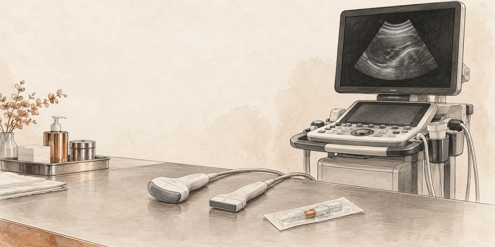

POCUS masterclass · Shock
RUSH: ultrasound approach to shock.
Pump, tank, pipes. Five windows, one question: why is this patient hypotensive?

Rapid Ultrasound in SHock (RUSH) is a structured bedside scan for the hypotensive patient whose cause is not yet clear. It joins the focused cardiac, IVC, eFAST, aortic and lung scans into one sequence, so you can answer three physiological questions in a few minutes:
- Pump: is the heart the problem (tamponade, poor LV, failing RV)?
- Tank: is the circulation empty, leaking or overloaded (IVC, free fluid, pleural fluid, B-lines, pneumothorax)?
- Pipes: is a great vessel ruptured or blocked (aortic aneurysm or dissection, DVT as a marker of PE)?
For anaesthesia residents, MOs and ICU trainees. You should already be able to get the basic cardiac and lung views. This page is about putting the views together and deciding what to do.
- 01–02 · Why scan · the framework8 min
- Part I · Acquisition · the five windows29 min
- Part II · Interpretation · classifier18 min
- Part III · Arrest and peri-arrest · SESAME, pulse check20 min
- Part IV · Four patients in shock20 min
- Quick check · Close12.5 min
The examination is unreliable. The scan narrows the list.
Undifferentiated shock (for example SBP < 90 mmHg or MAP < 65 mmHg with signs of hypoperfusion, such as raised lactate, oliguria or confusion) has four mechanisms that need opposite treatments.
Fluid helps hypovolaemia and may harm cardiogenic shock. Inotropes do nothing for tamponade. Decompression (needle or finger thoracostomy, then a chest drain) treats tension pneumothorax and helps nothing else.
In ED patients with non-traumatic hypotension, an immediate goal-directed scan narrowed the differential and made the correct final diagnosis more likely to be top of the list than a delayed scan (Jones 2004). Bedside ultrasound reduced diagnostic uncertainty and changed resuscitation decisions (Shokoohi 2015).
A 2023 meta-analysis (Yoshida, 12 studies, 1,132 patients) found POCUS has moderate-to-high sensitivity and high specificity for all four shock types. A positive pattern is good at ruling a cause in. A negative scan is weaker at ruling one out. An earlier RUSH-specific review reached the same conclusion (Stickles 2019); there, rule-out performance was best for obstructive shock (negative likelihood ratio about 0.13) and weakest for mixed shock.
The SHoC-ED randomised trial (Atkinson 2018) found no survival benefit from a standard POCUS protocol in ED patients with undifferentiated hypotension. It also found no harm.
Pump. Tank. Pipes. In the HI-MAP order.
| Component | Question | Main views |
|---|---|---|
| Pump | Effusion or tamponade? LV squeezing? RV dilated? | Subxiphoid, PLAX, PSAX, A4C |
| Tank | How full is it? Is it leaking? Is it overloaded? | IVC, eFAST (Morison's, splenorenal, pelvis), pleural bases, anterior lung |
| Pipes | Is the aorta ruptured or dissected? Is there clot in the leg veins? | Abdominal aorta (subxiphoid to bifurcation), aortic root in PLAX, 2-point leg compression |
- What is my clinical shortlist?
- Which views will separate those causes?
- What will I do differently for each result?
- When will I scan again?
HI-MAP is the EMCrit (Weingart) version, 'Rapid Ultrasound for Shock and Hypotension'. Pump/Tank/Pipes is Perera 2010, 'Rapid Ultrasound in SHock'. They are two related protocols covering the same views.
- HHeartSubxiphoid first, then parasternal and apical views.
- IIVCSubxiphoid long axis, measured about 2 cm from the RA junction.
- MMorison'sThe eFAST abdominal views, including the bases for pleural fluid.
- AAortaTransverse, from the subxiphoid region to the bifurcation.
- PPneumothoraxAnterior lung sliding on both sides, with B-lines during the same sweep.
Add legs (2-point compression at the common femoral and popliteal veins) when the RV is dilated or PE is suspected.
Five windows.
Phased array (cardiac) for the heart, IVC, aorta and lungs; the curvilinear probe as an alternative for the abdomen and aorta. Linear probe for pleural detail and the DVT scan. Patient supine.
Get the views · then decide what they mean
Where the probe goes, and what normal and abnormal look like.
Click (or Tab to and press Enter on) each probe station. Each opens a schematic sonogram with a Normal / Abnormal toggle and a link to the page that teaches it in detail.
Three questions of the heart, not a full echo.
The focused cardiac scan answers yes/no questions (FoCUS: Spencer 2013; WINFOCUS international recommendations, Via 2014). Full detail is on the Cardiac page.
- Effusion: an anechoic space between the pericardium and the heart. In PLAX, a pericardial effusion runs in front of the descending thoracic aorta. A pleural effusion runs behind it.
- Tamponade signs: RA collapse in systole (sensitive, appears early), RV free-wall collapse in early diastole (more specific), and a plethoric IVC with little respiratory variation (sensitive, not specific).
- Tamponade is a clinical-plus-echo diagnosis. A small effusion in a shocked patient may be incidental. A fast-collecting small effusion (after trauma, cardiac surgery or a procedure) can tamponade.
- Pitfall: an epicardial fat pad (seen at the front only, speckled, moves with the heart) is not an effusion.
A visual estimate is enough: hyperdynamic (walls nearly meet at end-systole) / normal / reduced / severely reduced. Trained emergency and critical care clinicians agree well with formal echo on this. Hyperdynamic with a small cavity fits hypovolaemia, early distributive shock, or an under-filled LV behind an RV obstruction.
- Bedside heuristic: in A4C the RV is normally about two-thirds of LV size, and RV ≥ LV means it is significantly dilated. Formal ASE cut-offs: RV basal diameter > 41 mm; TAPSE < 17 mm suggests RV systolic dysfunction. Avoid a foreshortened or off-axis A4C, which falsely enlarges the RV. In PSAX, a D-shaped LV shows septal flattening from RV pressure or volume overload.
- In shock, acute RV dilatation with a small LV points to massive PE until proven otherwise. A thin RV wall suggests an acute cause; a thick RV free wall (> 5 mm) suggests a chronic cause such as pulmonary hypertension.
- McConnell's sign (RV free wall moving poorly while the apex still contracts) suggests acute PE but is not sensitive, and is also seen in RV infarction. Use it as supportive, not diagnostic.
Also look for: a dilated aortic root (> 4 cm in PLAX) or an intimal flap (dissection), and gross valve failure (flail leaflet, torrential regurgitation). Both need formal echo. A small, hyperdynamic LV on inotropes can cause dynamic LV outflow tract obstruction (systolic anterior motion of the mitral valve): here more inotrope worsens shock; give fluid, stop the inotrope, use a pure vasoconstrictor and get formal echo.
A pressure gauge, not a fluid-responsiveness test.
Subxiphoid long axis. Show the IVC entering the RA; measure about 2 cm caudal to the RA junction (or just caudal to the hepatic vein), at right angles to the vessel walls. M-mode helps.
| IVC diameter | Collapse with sniff | Estimated RAP |
|---|---|---|
| ≤ 2.1 cm | > 50% | 3 mmHg (0 to 5) |
| > 2.1 cm | < 50% | 15 mmHg (10 to 20) |
| Any other combination | 8 mmHg (5 to 10) |
- A small, collapsing IVC in a shocked patient suggests low RAP. This fits hypovolaemic or distributive shock, and fluid is unlikely to do harm.
- A plethoric, fixed IVC suggests high RAP: tamponade, PE, tension pneumothorax, RV failure, or fluid overload. Further fluid is unlikely to help.
- Not a reliable predictor of fluid responsiveness in the spontaneously breathing patient. The middle range tells you little.
- On positive-pressure ventilation the pattern reverses: the IVC distends on inspiration. A distensibility index > 18% predicted fluid responsiveness in Barbier 2004 (sedated, passively ventilated septic patients, tidal volume about 8.5 mL/kg). Performance is poor at lung-protective tidal volumes (6 mL/kg), with spontaneous breathing effort, or with raised intra-abdominal pressure. A dilated IVC on the ventilator is common and less meaningful; a small IVC is still informative.
Pitfalls: the cylinder effect (scanning off-centre underestimates the diameter); the aorta mistaken for the IVC; raised intra-abdominal pressure; severe TR; athletes with large IVCs; a forceful sniff exaggerating collapse. If the subxiphoid window is poor, the internal jugular vein (Perera's original RUSH 'Tank') is an alternative gauge of venous pressure. More on the Cardiac page.
Free fluid, pleural fluid, B-lines, pneumothorax.
Morison's pouch (the most dependent upper-abdominal space when supine, and the most sensitive single view), the splenorenal and subphrenic spaces, and the pelvis. See eFAST.
- In trauma, free fluid plus shock means haemorrhage until proven otherwise.
- In non-trauma, think about ruptured ectopic pregnancy (any woman of reproductive age), ascites (chronic, and may be the sepsis source: spontaneous bacterial peritonitis), or ruptured viscus.
- A negative FAST does not exclude bleeding: small volumes, retroperitoneal bleeding (pelvic fracture, AAA) and early scans can all be missed. Repeat the scan.
At the bases, look for the spine sign (vertebral bodies seen above the diaphragm through fluid) and an anechoic collection above the diaphragm: haemothorax, heart failure, empyema.
- ≥ 3 B-lines in an intercostal space = a positive region. Bilateral, diffuse positive regions = interstitial syndrome. In shock with a poor LV and a plethoric IVC, this means cardiogenic pulmonary oedema.
- B-lines are not specific: ARDS, pneumonia and fibrosis also cause them. Patchy distribution, pleural-line irregularity and spared areas point to non-cardiogenic causes. Detail on the Lung page.
- New B-lines appearing during fluid resuscitation are a useful stop signal (the FALLS-protocol idea, Lichtenstein).
- Lung sliding, B-lines or a lung pulse at the probe = no pneumothorax at that point (high negative predictive value).
- No sliding is not specific: mainstem intubation, apnoea, pleurodesis, adhesions, bullae, ARDS.
- Lung point (where sliding lung meets non-sliding pleura) confirms pneumothorax (specificity close to 100%).
- Tension pneumothorax is a clinical diagnosis. In the peri-arrest patient, absent sliding plus a plethoric IVC with clinical signs (unilateral absent breath sounds, rising airway pressures, hypoxia, haemodynamic collapse) is enough to decompress. Do not hunt for a lung point first. If time allows, check the tube position and look for a lung pulse.
Scan the whole aorta. Measure outer wall to outer wall.
- Curvilinear or phased-array probe, transverse, epigastric midline. The aorta sits just anterior and slightly left of the vertebral body (bright curve with a shadow below). The IVC is on the patient's right.
- Sweep in steps: coeliac trunk (the 'seagull') → SMA → renal level (left renal vein crosses between aorta and SMA) → infrarenal aorta → bifurcation (just above the umbilicus, about L4). Most AAAs are infrarenal, so stopping early misses them.
- Measure the maximum anteroposterior diameter, outer wall to outer wall, at right angles to the long axis. Confirm in long axis. Screening programmes may use inner-to-inner (UK NAAASP), so state the method in your report.
- ≥ 3.0 cm = aneurysm. Mural thrombus can make the lumen look normal. Measure the wall, not the flow channel.
- Gas: steady graded pressure, move left or right, or use a coronal view through the liver or flank.
- ED bedside ultrasound is highly accurate at finding an AAA (Rubano 2013).
- It cannot reliably show rupture. Most ruptures bleed into the retroperitoneum, so there is often no intraperitoneal free fluid.
- Hypotension + known or newly found AAA = ruptured AAA until proven otherwise. Call the vascular team. Do not wait for CT if the patient is unstable.
- Dissection: a dilated aortic root in PLAX, an intimal flap, new aortic regurgitation or a pericardial effusion are clues. TTE cannot exclude dissection. Get CT or TOE.
- DVT: 2-point compression of the common femoral vein (at and just distal to the saphenofemoral junction) and the popliteal vein. A non-compressible vein in a shocked patient with a dilated RV strongly supports PE. See DVT.
Put the views together.
Single findings mislead. Patterns, the clinical picture and a second scan do not.
Shock is often mixed
- A septic patient with septic cardiomyopathy.
- A bleeding patient on a beta-blocker.
- A PE patient who is also dry.
The RUSH table.
Adapted from Perera 2010 (RUSH findings in classic shock states).
| Hypovolaemic | Cardiogenic | Obstructive | Distributive | |
|---|---|---|---|---|
| Pump | Hyperdynamic, small LV cavity | Poorly contracting, often dilated LV | Hyperdynamic LV; effusion with RA/RV collapse (tamponade); dilated RV (PE); mediastinal shift (tension PTX) | Hyperdynamic early; may be reduced in septic cardiomyopathy |
| Tank: IVC | Small, collapsing | Plethoric | Plethoric | Normal or small (early) |
| Tank: lungs and spaces | Free fluid (haemorrhage); haemothorax | Bilateral B-lines; pleural effusions | Absent sliding + lung point (pneumothorax); A-lines with PE | Free fluid or effusion as the source (peritonitis, empyema); focal consolidation |
| Pipes | AAA, dissection | Usually normal | DVT (supports PE) | Usually normal |
- Hypovolaemic and early distributive shock look the same on ultrasound (hyperdynamic LV, small IVC). Tell them apart clinically: warm vs cold peripheries, fever, source, bleeding history.
- Obstructive shock: a plethoric IVC with a small, hyperdynamic LV (underfilled behind the obstruction). The cause is the effusion, the RV or the pleura.
- Cardiogenic shock: poor LV + plethoric IVC + B-lines. Look for a mechanical cause (acute MR, VSD, severe AS) on formal echo.
- A-lines everywhere + shock makes cardiogenic pulmonary oedema unlikely (BLUE-protocol logic, Lichtenstein 2008). Add a DVT scan: A-profile + proximal DVT strongly suggests PE (BLUE protocol, derived in acute respiratory failure rather than shock: specificity about 99%, sensitivity about 81%). A negative leg scan does not exclude PE.
Toggle the findings. Watch the pattern change.
A teaching model, not a diagnostic algorithm. Named patterns (tamponade, tension pneumothorax, massive PE, ruptured AAA) override the scores, and a caveat appears for each finding. When two patterns score close together, the tool says so.
Teaching model only. Weights are illustrative, not validated.
The scan is a snapshot. Shock is a film.
- Start from the history, examination, ECG, lactate and blood gas. Ultrasound adjusts your probabilities. It does not replace them.
- Rule in rather than rule out. A clear positive finding (tamponade, AAA, lung point, B-lines with a poor LV) is persuasive. A normal-looking scan does not exclude PE, dissection, a contained bleed or sepsis.
- Name a leading diagnosis and an action after every scan: fluid, vasopressor, inotrope, drain, decompress, thrombolyse, call the surgeon.
- Rescan after each intervention: after a 250 to 500 mL fluid bolus, after starting a vasopressor, and after any deterioration.
- Look for: LV filling, change in IVC size, new B-lines (stop fluid), an enlarging effusion, new free fluid, and septic cardiomyopathy unmasked once vasopressors raise afterload.
- Record each scan: views obtained, findings, image quality, time. An inadequate view is not a normal view.
- Depends on the operator and on body habitus. Ventilated, obese, post-operative and surgical-emphysema patients give poor windows.
- Static measures (IVC) predict fluid responsiveness poorly. Use dynamic tests (passive leg raise with LVOT VTI or cardiac output) when the question matters. See Cardiac.
- No outcome benefit has been shown in an RCT (SHoC-ED). The benefit comes from acting quickly on a correct finding.
- Ultrasound cannot exclude: aortic dissection, retroperitoneal bleeding, early or small free fluid, or PE without RV strain.
- Do not let scanning delay life-saving treatment (CPR, needle decompression, blood, a call to the surgeon).
When the pulse goes.
The same windows, a different clock. In arrest, ultrasound has to fit inside the ALS loop: scan what you can during compressions, and give the heart no more than the pulse-check pause.
SESAME · the 10-second pulse check · pitfalls and guidance
SESAME: lung first, heart last.
Lichtenstein's Sequential Echographic Scanning Assessing Mechanism Or Origin of Severe Shock of Indistinct Cause is a whole-body scan for cardiac arrest and severe shock. He does it with one microconvex probe, so no time is lost changing probes.
| Step | Looks for | If positive |
|---|---|---|
| 1 · Lung | Pneumothorax first (no sliding, then a lung point). The lung profile also feeds the BLUE and FALLS logic. | Decompress |
| 2 · Veins | Lower-limb DVT, the clue to PE | With an A-profile: think PE, consider thrombolysis |
| 3 · Abdomen | Massive haemorrhage. In trauma, do this before the veins. | Blood, surgeon |
| 4 · Pericardium | Effusion and tamponade | Drain |
| 5 · Heart | Other cardiac causes, and whether there is any activity | Depends on the finding |
Start with the cause that is quickest to rule in and quickest to fix (pneumothorax). The lung, legs and abdomen can be scanned while compressions continue, by a second operator. The heart, which RUSH looks at first, comes last here: during CPR you can only see it clearly in the pulse-check pause. CASA uses the same split: lung and free fluid during compressions, the heart during pulse checks (Gardner 2018).
SESAME is an expert protocol (Lichtenstein 2014; Lichtenstein and Malbrain 2015). It has not been tested for its effect on survival.
Scan in the pause. Read it during compressions.
- The person scanning is not the team leader. In one ED study, pauses were longer when the doctor leading the resuscitation also did the scan (Clattenburg 2018).
- Put the probe on the subxiphoid window during compressions and find the view. It usually stays clear of the hands and pads; if it interferes with compressions, lift off and reapply just before the pause. Keep the probe in place for the pause (CASA).
- Someone counts the seconds out loud. The pulse check, rhythm check and scan share the same pause, which should not last longer than 10 s.
- Record a clip; do not try to interpret it live. If you have no view by 10 s, restart compressions and try again at the next check.
- Review the clip and report one question per pulse check (CASA, Gardner 2018): 1 · tamponade? 2 · RV dilated? 3 · any cardiac activity?
- Say the finding to the team leader, who decides what to do.
A good finding helps you act. One finding alone should not stop resuscitation.
Video studies in the ED found longer pauses when ultrasound was used (Huis in 't Veld 2017; Clattenburg 2018). Scan to a count, record a clip, and review it later.
Standstill is strongly linked to death (0.6% survived to discharge in REASON), but not 0%. Observers disagree on what counts as activity, and studies define it differently. The decision to stop belongs to the team and rests on the whole picture.
Physician sonographers rating the same arrest clips reached only moderate agreement on standstill (Hu 2018). Clips with valve flutter or ventilation-related motion are commonly misread; neither counts as cardiac activity. Compression or ventilation moving the heart is not cardiac activity.
Organised wall motion with no palpable pulse is common in patients thought to be in PEA (Breitkreutz 2010). Continue ALS and compressions per protocol unless an arterial line shows an adequate pressure. Meanwhile look hard for a reversible cause and consider vasopressor support.
The RV can dilate during arrest from non-PE causes: in pigs it dilated after hypovolaemic, hyperkalaemic and primary arrhythmic arrest (Aagaard 2017). ERC guidance advises against diagnosing PE from RV dilation on its own during arrest. Look for support: the story, a DVT, an early scan.
Fine VF can look like asystole on the monitor. Ultrasound may show a quivering, uncoordinated myocardium. In one ED TOE study, TOE identified VF in some out-of-hospital arrests thought to be asystole (Teran 2019). Check the leads and the gain, and say what you see to the team leader.
After intubation, TOE gives continuous views during compressions without needing a pause. It also shows where compressions land, which in Teran 2019 was over the aortic root or LVOT in 53% of patients rather than over the LV. It needs a trained operator. ILCOR's 2025 scoping review of TOE made no treatment recommendation.
| Study | Design | Finding |
|---|---|---|
| Huis in 't Veld 2017 | 23 ED arrests, pauses video-recorded | Pulse checks with POCUS lasted 21 s on average, against 13 s without it, well over the 10 s target. |
| Clattenburg 2018 | 24 ED arrests, 110 pauses, prospective | Pauses with POCUS were several seconds longer than pauses without it. |
| Clattenburg 2018 (CASA) | Before and after introducing CASA | Pauses with POCUS were shorter after a structured protocol was brought in, but most still went over 10 s. |
| Gaspari 2016 (REASON) | 793 patients in PEA or asystole, 20 centres | Cardiac activity was the factor most strongly linked to survival (to discharge: OR 5.7, 1.5 to 21.9). With no activity, 0.6% (95% CI 0.3 to 2.3) survived to discharge. |
| Hu 2018 | Physician sonographers rating recorded arrest clips | Only moderate agreement on standstill. |
| Breitkreutz 2010 (FEEL) | Prehospital, prospective | Echo during a pause of under 10 s within ALS was feasible, and it often showed wall motion in patients thought to be in PEA. |
| Teran 2019 | 33 out-of-hospital arrests, ED TOE | TOE identified VF in some patients thought to be in asystole. Area of maximal compression over the aortic root or LVOT in 53% of patients. Findings often changed management. |
All observational, mostly single-centre. No randomised trial has shown that ultrasound during CPR improves survival.
- Only skilled operators should use point-of-care ultrasound (POCUS) during arrest.
- POCUS must not add pauses or make pauses in chest compressions longer.
- POCUS may help identify treatable causes such as cardiac tamponade and pneumothorax.
- Right ventricular dilation on its own during arrest should not be used to diagnose (massive) pulmonary embolism.
- Do not use the apparent contractility of the myocardium on POCUS as the only reason to stop CPR.
AHA 2025 says POCUS by experienced professionals during cardiac arrest may be considered to look for reversible causes, provided it does not interrupt CPR. "May be considered" is AHA wording for a weak (class 2b) recommendation; check the exact class and level of evidence in the Part 9 recommendation table.
2020: ILCOR suggests against using point-of-care echocardiography for prognostication during CPR (weak recommendation, very low-certainty evidence). This does not rule out using it to look for reversible causes. 2025: a scoping review of TOE during CPR found it feasible and often useful to management, but made no treatment recommendation.
- Skilled operators only.
- Use it to find a cause you can treat.
- It must not lengthen or add pauses.
- Do not use it alone to decide to stop CPR.
Follow your local resuscitation protocol.
Four patients in shock.
Read the vignette, commit to a shock type and a first action, then reveal one step at a time (R). Cases 1 to 3 follow HI-MAP; case 4 is an arrest, scanned in the SESAME order.
Teaching vignettes. All images are schematic simulations. Each case can be loaded into the classifier.
Ten questions before we finish.
Tamponade signs, the IVC, aorta measurement, pneumothorax, the PE pattern, the evidence, and ultrasound during cardiac arrest. One at a time.
Thank you.
- Pump, tank, pipes, in the HI-MAP order. Finish the exam even after the first abnormal finding.
- Patterns rule in. A normal-looking scan does not rule out.
- Rescan after every intervention.
- In arrest: scan during compressions, record within a 10-second pause, and never stop CPR on one ultrasound finding.
Simulations are purpose-built teaching models, not diagnostic images. Anatomy, echogenicity and thresholds are simplified. Key references on the next slide. Contact: contact@anantf.com
Where the numbers come from.
Key references (tap to collapse)
- Perera P, Mailhot T, Riley D, Mandavia D. The RUSH exam: Rapid Ultrasound in SHock in the evaluation of the critically ill. Emerg Med Clin North Am. 2010;28(1):29–56. PubMed
- Weingart SD, Duque D, Nelson B. Rapid Ultrasound for Shock and Hypotension (RUSH-HIMAPP). EMCrit [online]. 2009. Source
- Jones AE, Tayal VS, Sullivan DM, Kline JA. Randomized, controlled trial of immediate versus delayed goal-directed ultrasound to identify the cause of nontraumatic hypotension in emergency department patients. Crit Care Med. 2004;32(8):1703–8. PubMed
- Shokoohi H, Boniface KS, Pourmand A, et al. Bedside ultrasound reduces diagnostic uncertainty and guides resuscitation in patients with undifferentiated hypotension. Crit Care Med. 2015;43(12):2562–9. PubMed
- Atkinson PR, Milne J, Diegelmann L, et al. Does point-of-care ultrasonography improve clinical outcomes in emergency department patients with undifferentiated hypotension? An international randomized controlled trial from the SHoC-ED investigators. Ann Emerg Med. 2018;72(4):478–89. PubMed
- Stickles SP, Carpenter CR, Gekle R, et al. The diagnostic accuracy of a point-of-care ultrasound protocol for shock etiology: a systematic review and meta-analysis. CJEM. 2019;21(3):406–17. PubMed
- Yoshida T, Yoshida T, Noma H, Nomura T, Suzuki A, Mihara T. Diagnostic accuracy of point-of-care ultrasound for shock: a systematic review and meta-analysis. Crit Care. 2023;27(1):200. PubMed
- Spencer KT, Kimura BJ, Korcarz CE, et al. Focused cardiac ultrasound: recommendations from the American Society of Echocardiography. J Am Soc Echocardiogr. 2013;26(6):567–81. PubMed
- Via G, Hussain A, Wells M, et al. International evidence-based recommendations for focused cardiac ultrasound. J Am Soc Echocardiogr. 2014;27(7):683.e1–683.e33. PubMed
- Labovitz AJ, Noble VE, Bierig M, et al. Focused cardiac ultrasound in the emergent setting: a consensus statement of the American Society of Echocardiography and American College of Emergency Physicians. J Am Soc Echocardiogr. 2010;23(12):1225–30. PubMed
- Rudski LG, Lai WW, Afilalo J, et al. Guidelines for the echocardiographic assessment of the right heart in adults: a report from the American Society of Echocardiography. J Am Soc Echocardiogr. 2010;23(7):685–713. PubMed
- Lang RM, Badano LP, Mor-Avi V, et al. Recommendations for cardiac chamber quantification by echocardiography in adults: an update from the American Society of Echocardiography and the European Association of Cardiovascular Imaging. J Am Soc Echocardiogr. 2015;28(1):1–39.e14. PubMed
- Barbier C, Loubières Y, Schmit C, et al. Respiratory changes in inferior vena cava diameter are helpful in predicting fluid responsiveness in ventilated septic patients. Intensive Care Med. 2004;30(9):1740–6. PubMed
- Volpicelli G, Elbarbary M, Blaivas M, et al. International evidence-based recommendations for point-of-care lung ultrasound. Intensive Care Med. 2012;38(4):577–91. PubMed
- Lichtenstein DA, Mezière GA. Relevance of lung ultrasound in the diagnosis of acute respiratory failure: the BLUE protocol. Chest. 2008;134(1):117–25. PubMed
- Lichtenstein D. FALLS-protocol: lung ultrasound in hemodynamic assessment of shock. Heart Lung Vessel. 2013;5(3):142–7. PubMed
- Rubano E, Mehta N, Caputo W, Paladino L, Sinert R. Systematic review: emergency department bedside ultrasonography for diagnosing suspected abdominal aortic aneurysm. Acad Emerg Med. 2013;20(2):128–38. PubMed
- Wanhainen A, Van Herzeele I, Bastos Goncalves F, et al. European Society for Vascular Surgery (ESVS) 2024 clinical practice guidelines on the management of abdominal aorto-iliac artery aneurysms. Eur J Vasc Endovasc Surg. 2024;67(2):192–331. PubMed
- Konstantinides SV, Meyer G, Becattini C, et al. 2019 ESC guidelines for the diagnosis and management of acute pulmonary embolism developed in collaboration with the European Respiratory Society (ERS). Eur Heart J. 2020;41(4):543–603. PubMed
- Schulz-Menger J, Collini V, Gröschel J, et al. 2025 ESC guidelines for the management of myocarditis and pericarditis. Eur Heart J. 2025. PubMed
- Lichtenstein D. How can the use of lung ultrasound in cardiac arrest make ultrasound a holistic discipline. The example of the SESAME-protocol. Med Ultrason. 2014;16(3):252–5. PubMed
- Lichtenstein D, Malbrain ML. Critical care ultrasound in cardiac arrest. Technological requirements for performing the SESAME-protocol — a holistic approach. Anaesthesiol Intensive Ther. 2015;47(5):471–81. PubMed
- Gardner KF, Clattenburg EJ, Wroe P, et al. The Cardiac Arrest Sonographic Assessment (CASA) exam — a standardized approach to the use of ultrasound in PEA. Am J Emerg Med. 2018;36(4):729–31. PubMed
- Clattenburg EJ, Wroe PC, Gardner K, et al. Implementation of the Cardiac Arrest Sonographic Assessment (CASA) protocol for patients with cardiac arrest is associated with shorter CPR pulse checks. Resuscitation. 2018;131:69–73. PubMed
- Huis in 't Veld MA, Allison MG, Bostick DS, et al. Ultrasound use during cardiopulmonary resuscitation is associated with delays in chest compressions. Resuscitation. 2017;119:95–8. PubMed
- Clattenburg EJ, Wroe P, Brown S, et al. Point-of-care ultrasound use in patients with cardiac arrest is associated [sic] prolonged cardiopulmonary resuscitation pauses: a prospective cohort study. Resuscitation. 2018;122:65–8. PubMed
- Gaspari R, Weekes A, Adhikari S, et al. Emergency department point-of-care ultrasound in out-of-hospital and in-ED cardiac arrest. Resuscitation. 2016;109:33–9. PubMed
- Hu K, Gupta N, Teran F, et al. Variability in interpretation of cardiac standstill among physician sonographers. Ann Emerg Med. 2018;71(2):193–8. PubMed
- Breitkreutz R, Price S, Steiger HV, et al. Focused echocardiographic evaluation in life support and peri-resuscitation of emergency patients: a prospective trial. Resuscitation. 2010;81(11):1527–33. PubMed
- Aagaard R, Granfeldt A, Bøtker MT, et al. The right ventricle is dilated during resuscitation from cardiac arrest caused by hypovolemia: a porcine ultrasound study. Crit Care Med. 2017;45(9):e963–70. PubMed
- Teran F, Dean AJ, Centeno C, et al. Evaluation of out-of-hospital cardiac arrest using transesophageal echocardiography in the emergency department. Resuscitation. 2019;137:140–7. PubMed
- Soar J, Böttiger BW, Carli P, et al. European Resuscitation Council Guidelines 2025: adult advanced life support. Resuscitation. 2025;215 Suppl 1:110769. PubMed
- Wigginton JG, Agarwal S, Bartos JA, et al. Part 9: adult advanced life support: 2025 American Heart Association guidelines for cardiopulmonary resuscitation and emergency cardiovascular care. Circulation. 2025;152(16 Suppl 2):S538–77. PubMed
- Berg KM, Soar J, Andersen LW, et al. Adult advanced life support: 2020 International Consensus on Cardiopulmonary Resuscitation and Emergency Cardiovascular Care Science With Treatment Recommendations. Circulation. 2020;142(16 Suppl 1):S92–139. PubMed
- Reynolds JC, Issa MS, Nicholson TC, et al. Prognostication with point-of-care echocardiography during cardiac arrest: a systematic review. Resuscitation. 2020;152:56–68. PubMed
- International Liaison Committee on Resuscitation Advanced Life Support Task Force. Advanced life support: 2025 International Consensus on Cardiopulmonary Resuscitation and Emergency Cardiovascular Care Science With Treatment Recommendations. Circulation. 2025. Source
Simulations are purpose-built schematic teaching models, not diagnostic images. Anatomy, echogenicity, timing and thresholds are simplified. Check thresholds against current guidelines and local protocols.